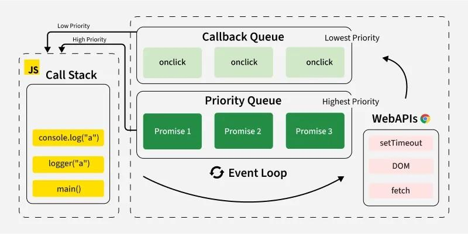

JavaScript is a programming language widely used to create dynamic content for websites. It is a lightweight, cross-platform, and single-threaded programming language. It's an interpreted language that executes code line by line, providing more flexibility.
At first, JavaScript is only used for web development running on browsers, which have built-in JavaScript engines to execute the JavaScript code. Until 2009, Ryan Dahl embedded v8 into a C++ program, creating Node.js, which provides run-time environment for JavaScript outside of the browsers, enabling its application on the server side.
JavaScript is a single-threaded programming language, meaning that it can only execute one task at a time. And non-blocking or asychronous means that time-consuming operations like I/O operations won't block it while waiting for the feedbacks, instead, it will continue processing other tasks and get back when the result comes out. These two characteristics are very different from C or C++, which are multi-threaded and blocking by default.
Here is an example to illustrate the asynchronous property of JavaScript.
// Testing code
for (var i = 0; i < 3; i++) {
setTimeout(() => console.log(i), 1000);
console.log("i = " + i);
}
// Console output
i=0
i=1
i=2
3
3
3
During each iteration, the for loop sets up a timer to print i later and also prints its value immediately. The immediate print of i comes out before any callback from the timer and the delayed output is not 0, 1, 2. This happens because the loop completes before any timer callback executes. All callbacks run 1 second later and reference the same i variable, which by then holds the final value. This behavior occurs due to var being function-scoped, causing all callbacks to share the same reference. Using the block-scoped "let i = 0" instead would create different instances during each iteration and obtain the results:0, 1, 2.
OOP is a style of programming which combines data and the related functions that operate on it into a single unit called object. OOP provides four important features: abstraction, encapsulation, inheritance and polymorphism.
In JavaScript, only constructor functions have the prototype property, while any objects could serve as a prototype to other objects. Every object has an internal, hidden [[Prototype]] property that links it to another object, allowing it inherit data and methods from another object.
Now we can look at what happens when use the new keyword to create an object.
//Conceptual Equivalent
obj = new MyObj(param);
//Conceptual Equivalent
const obj = {}
obj.[[prototype]] = MyObj.prototype
MyObj.call(obj, param)
return obj
C++ and JavaScript are both object-oriented programming language, but there's difference between them: C++ is a classed-based language while JavaScript is a prototype-based language. In C++, class is the central concept, acting as a blueprint or template for creating objects and every object is an instance of a class. Whille in JavaScript, the concept of class is not necessary, objects inherits directly from other objects which are served as the prototype.
Prototype chain refers to the inheritance relationship between objects. Property or method access starts from an object itself and traverses up the property chain if not found. Object.prototype is the most basic prototype at the top of property chain, and its prototype is null. Below is an example displaying the traverse of property chain.
//my_dog -> dog -> mammals -> Animals ->
Object.prototype -> null
const Animals = {
eats: true
};
const mammals = Object.create(Animals)
mammals.has_fur = true;
const dogs = Object.create(mammals)
dogs.bark = true;
function traverse(obj){
let current = obj;
while(current)
{
console.log(current);
current = Object.getPrototypeOf(current)
}
};
traverse(dogs);
//output
{ bark: true }
{ has_fur: true }
{ eats: true }
[Object: null prototype] {}
'class' keyword is introduced in ES6, and is now recommended for object-oriented structure. This means even though the internal core of OOP in JavaScript is prototype which hasn't changed, we could write code in the fasion similar to classed-based programming language with 'class' keyword.
//recommended to use keyword 'class'
class Person{
constructor(name){
this.name = name;
}
greet(){
console.log("Hi, " + this.name);
}
}
const my_friend = new Person("Peter");
A property descriptor is an internal metadata that defines the characteristics of a property. Use Object.getOwnPropertyDescriptor(obj, prop) and Object.defineProperty(obj, prop, attr) to inspect and manually define the property descriptors. Methods in a class are non-enumerable by default.
//Property Descriptor
const obj = {};
Object.defineProperty(obj, "name", {
value: "Jesson",
writable: false,
enumerable: false,
configurable: true
});
console.log(obj); // {} enumerable:false
console.log(Object.getOwnPropertyDescriptors(obj, "name"));
JavaScript is single-threaded and it uses event loop to manage the execution of multiple tasks, deciding which one to run next. There are several important components: call stack, macrostack and microstack.
Event loop in JavaScript

The synchronous code always run first since the code are pushed into the call stack and executed immediately, only when the call stack is empty, the event loop moves tasks from microstack and macrostack into the call stack for execution.
// Example of event loop
console.log("Start");
// push the callback into the macrostack
setTimeout(() => {
console.log("setTimeout Callback");
}, 0);
// push the callback into the microstack
Promise.resolve().then(() => {
console.log("Promise Resolved");
});
console.log("End");
/*
1. Run all synchronous code (call stack)
2. Run ALL microtasks
3. Run ONE macrotask
4. Repeat
*/
// Output
Start
End
Promise Resolved
setTimeout Callback
A Promise is a special object in JavaScript that represents the eventual completion (or failure) of an asynchronous operation and its resulting value. Essentially, a Promise is a placeholder for a value that is not yet available but will be in the future.
A promise can be in one of the three states: pending, fulfilled, rejected. When a promise is settled(fulfilled or rejected), the corresponed callbacks will be added to the microstack for execution. Here is an example of the use of promise.
// Example of promise
const my_promise = new Promise((resolve, reject) => {
const success = true;
if(success){
resolve("Operation completed successfully.");
}
else{
reject("Operation failed.");
}
})
my_promise
.then(result => console.log(result))
.catch(result => console.log(result));
To better understand the internal model of promise, we should be aware of the hidden internal slots of the promise: [[PromiseState]], [[PromiseResult]], [[PromiseFulfillReactions]], [[PromiseRejectReactions]]. Every promise starts with the state of pending, until resolve(value) or reject(value) is called, then the promise will be settled to fulfilled or rejected(permenantly) and the value will be stored into the [[PromiseResult]]. Once the promise is settled, the callbacks stored in the [[PromiseFulfillReactions]](if resolved) or [[PromiseRejectReactions]](if rejected) will be added to the microstack and the slot will be cleared. Notice that the value stored in the [[PromiseResult]] will be passed to the callbacks as an argument. The handlers provided in .then() and .catch() are added to the [[PromiseFulfillReactions]] and [[PomiseRejectReactions]] seperately.
// Internal Process
/* const my_promise = new Promise(executor_function) */
// initial state of the promise: pending
// executor function runs immediately, resolve() is called
// state changes to fulfilled, "Operation completed successfully." is stored in the [[PromiseResult]]
/* my_promise.then(callback1).catch(callback2) */
// callbacks in .then() and .catch() are added to [[PromiseFulfillReactions]] and [[PromiseRejectReacions]]
seperately
// since the state is fulfilled, the callback stored in the [[PromiseFulfillReactions]] is pushed into the
microstack
In JavaScript, a variable can be declared after it has been used. This is because of hoisting, JavaScript's default behavior of moving declarations to the top. Running a JavaScript program could be considered accomplished in two phases: creation phase and execution phase. During the creation phase, the JavaScript engine would scan the code and register the function declarations, variables bindings, etc. And during the execution process, the declarations are already known to the run-time environment, the same effect as putting the declarations at the top of the scope. Noticed that the function declarations are hoisted with both the name and the function body.
However, we should always avoid relying on hoisting in practice, since it may affect the readability and cause mistakes. Always declare the variables first before using them.
// output: Hello, everyone.
greeting();
function greeting(){
console.log("Hello, everyone.");
}
// output: undefined
console.log(a);
var a = 5;
The temporal dead zone is the time between entering the scope and executing the declarations of let and constant. Even though the variables bindings already exist because of hoisting, the variables declared with let and constant are still not accessible.
// output: ReferenceError: Cannot access 'a'
before initialization
console.log(a);
let a = 5;
In short words, JavaScript doesn't not support Overloading functions. Functions with the same name and different parameter lists could not exist at the same time, the later one would override the former function.
// output: hi, undefined
function f1(){console.log("hi")};
function f1(name){console.log(`hi, ${name}`)};
f1();
In JavaScript, An object is a dynamic data structure that stores related data as key-value pairs, where each key uniquely identifies its value.
// example of an object
let obj = {name:"Helen", age:23};
Arrow functions were introduced in ES6 and provide a shorter syntax for writing anonymous functions. It's commonly used for callbacks and short function expressions.
// example of arrow functions
let greet = (name) => {
console.log(name);
};
// "()" is optional when there's only one parameter
// "{}" and "return" can be omitted if there's only
one expression
let greet1 = name => console.log(name);
{kind=link}